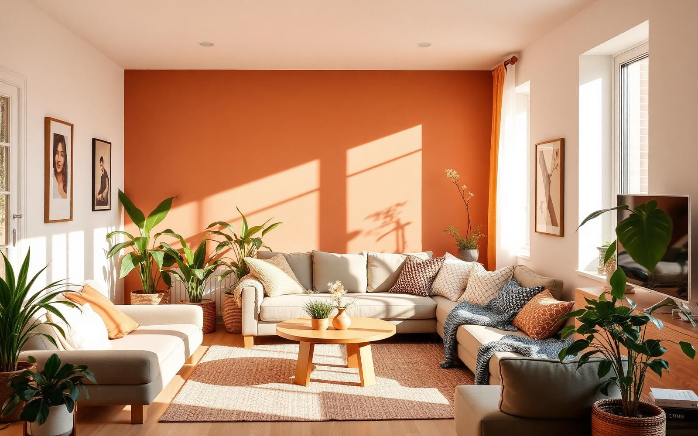
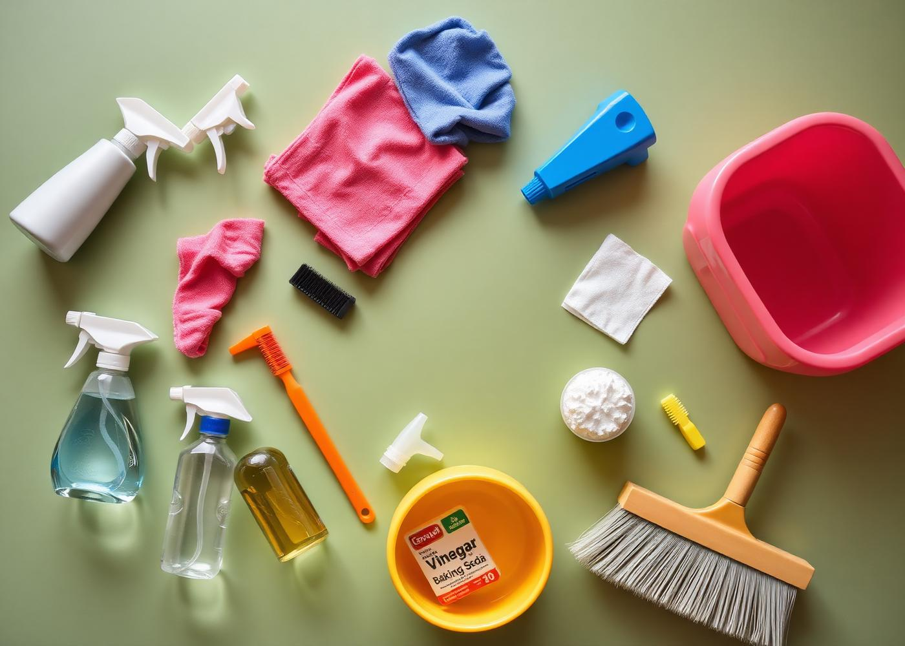
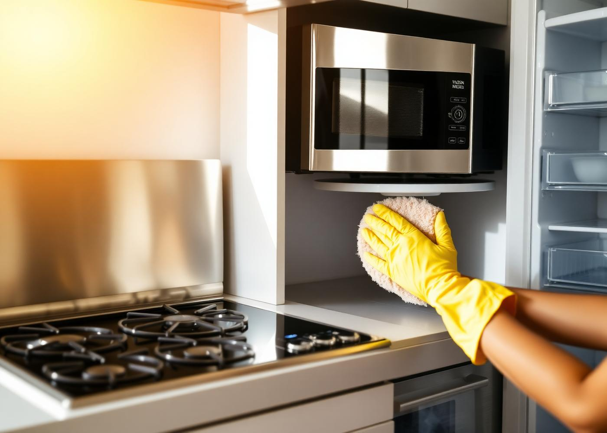
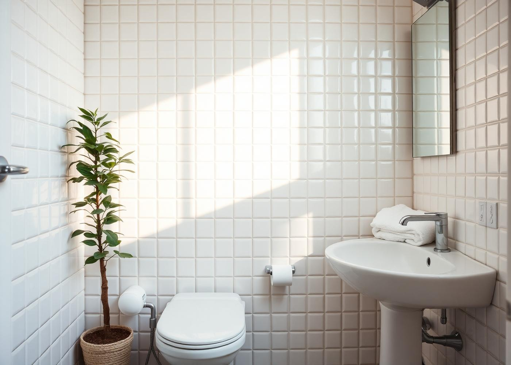
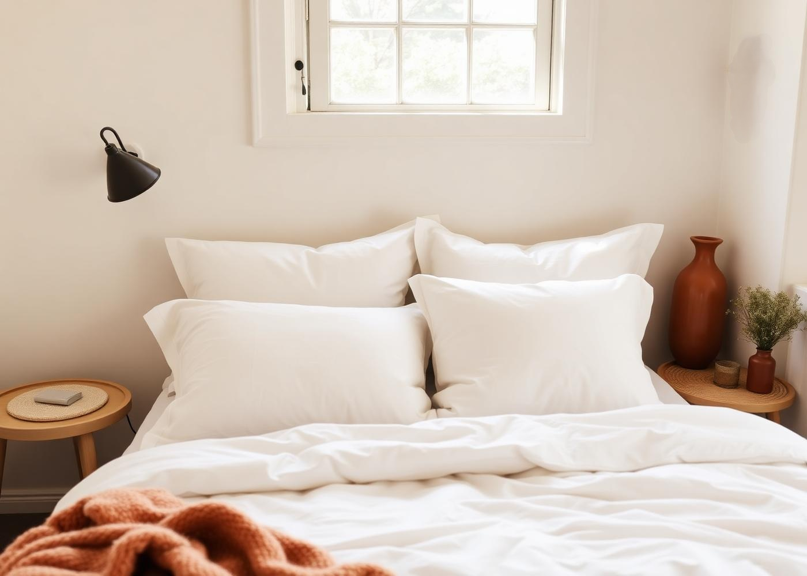
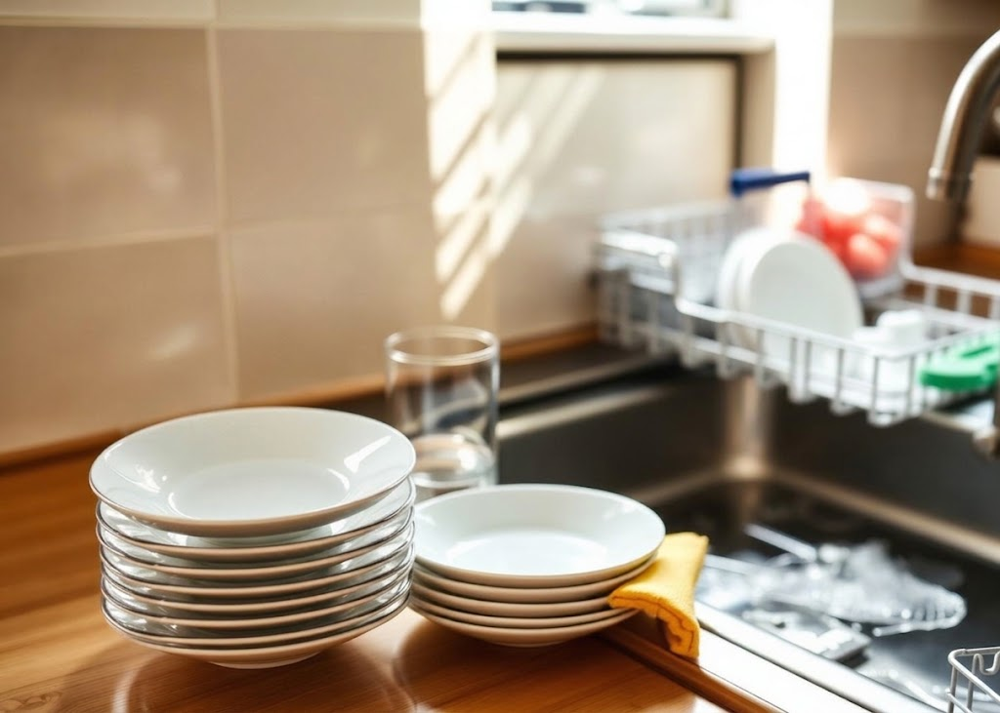
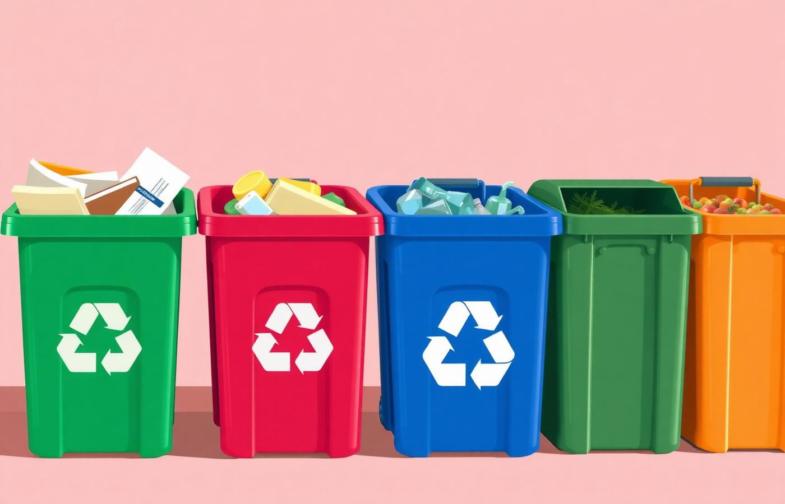
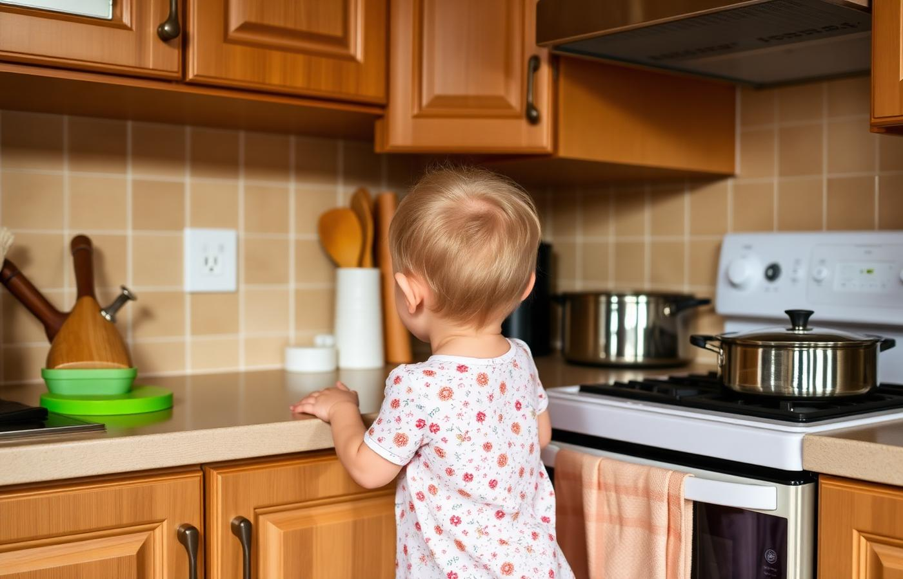

Pré-requisito
A especialidade de Cuidados da Casa exige que o desbravador já tenha concluído a especialidade de Técnicas de Lavanderia — afinal, cuidar da casa começa por saber cuidar das roupas: separar por cor e tecido, ler as etiquetas de conservação, dosar sabão, tratar manchas, secar e passar corretamente.
O arsenal do lar
Uma casa limpa não precisa de dezenas de frascos: precisa dos produtos certos, guardados em segurança e usados na diluição correta. Abaixo, a lista essencial dividida por função.


Coração da casa
Todo eletrodoméstico deve ser limpo desligado da tomada e frio (o gás fechado, no caso do fogão). Água e eletricidade nunca se encontram.
“Limpar depois de usar leva 2 minutos. Limpar depois de acumular leva 2 horas.”
Ciência doméstica
Bactérias, fungos, mofo e insetos precisam basicamente das mesmas quatro coisas. Tirar uma delas já quebra o ciclo — e é isso que a limpeza faz.
Água parada, panos molhados, azulejo sempre úmido, vazamentos e roupa guardada mal seca. É a condição nº 1 para fungos e mofo.
Faixa de 20 °C a 45 °C acelera a multiplicação. Por isso a geladeira (abaixo de 5 °C) conserva e o cozimento (acima de 70 °C) elimina.
Migalhas, gordura, restos na pia, lixo aberto, ralos com resíduo orgânico e ração deixada no chão alimentam baratas, formigas, moscas e ratos.
Cantos escuros, pouca ventilação, entulho, caixas de papelão, frestas, atrás de móveis e sob a pia: esconderijos perfeitos.



Depois da refeição
Tanto na pia quanto na lava-louças, o segredo está no preparo: raspar, separar e seguir a ordem do menos sujo para o mais sujo.
Superfície por superfície
Cada material pede um método. A regra de ouro para manchas: agir rápido, absorver sem esfregar e testar sempre o produto em um canto escondido.
| Superfície | Rotina | Limpeza profunda e manchas |
|---|---|---|
| Tapetes | Sacudir e aspirar 1–2× por semana; virar de vez em quando para desgastar por igual. | Lavar conforme a etiqueta (muitos vão à máquina); tapetes de banheiro semanalmente. Manchas: água com detergente neutro, dando batidinhas. Secar sempre à sombra e completamente. |
| Carpetes | Aspirar em movimentos cruzados, 2–3× por semana. | Bicarbonato polvilhado por 20 min absorve odores antes de aspirar. Manchas: pano branco úmido com detergente neutro, do exterior para o centro, sem encharcar. Extratora ou lavagem profissional 1–2× por ano. |
| Travesseiros | Fronha trocada semanalmente; arejar ao sol quinzenalmente (mata ácaros). | Fibra/pena laváveis: máquina em ciclo delicado, água morna, pouco sabão, secagem total (com bolinhas de tênis para não empelotar). Espuma/viscoelástico: não lavar — só aspirar e arejar. Trocar a cada 2 anos. |
| Móveis estofados | Aspirar semanalmente, inclusive frestas e sob as almofadas. | Tecido: espuma de sabão neutro batida, aplicada com pano branco. Couro: pano úmido e hidratante próprio (nunca álcool). Camurça: escova macia e produto específico. Nunca encharque e seque à sombra com ventilação. |
| Papel de parede | Espanador ou aspirador com bocal de escova, de cima para baixo. | Vinílico/lavável: pano bem torcido com água e detergente neutro, secando em seguida. Papel não lavável: apenas pano seco ou borracha branca. Jamais esfregue ou molhe as emendas — descolam. |
| Paredes pintadas | Tirar o pó de cima para baixo com vassoura envolta em pano. | Tinta lavável/acrílica: esponja macia com água e detergente neutro, limpando de baixo para cima para não escorrer marcas. Tinta fosca/PVA: só pano seco ou borracha. Marcas de caneta: álcool em pouca quantidade, testado antes. |
| Pisos | Varrer/aspirar diariamente e passar pano úmido. | Cerâmica e porcelanato: água, detergente e desinfetante. Madeira e laminado: pano quase seco, produto específico, nunca água em excesso nem água sanitária. Vinílico: neutro, sem abrasivos. Rejunte: escova com bicarbonato. |
| Janelas | Espanar peitoril e trilhos. | Vidros: água morna com detergente ou vinagre (1 parte para 3 de água), rodinho de cima para baixo e acabamento com jornal ou microfibra. Limpe em dia nublado — sol seca rápido e mancha. Trilhos: escova, aspirador e pano. Esquadrias de alumínio: pano úmido e neutro. Telas: escova macia. Segurança sempre: nunca suba no parapeito. |

Coleta seletiva
No Brasil, a coleta domiciliar é responsabilidade da prefeitura e costuma ter dois tipos: a coleta comum (rejeito e orgânico) e a coleta seletiva, em dias específicos. Descubra os dias e horários da sua rua no site da prefeitura ou da concessionária — e coloque o lixo na calçada só perto do horário, em saco fechado.
Prevenção
A maior parte dos acidentes com crianças acontece dentro de casa e é totalmente evitável.

Requisito prático
Manter é mais fácil que recuperar. Distribua as tarefas ao longo da semana e a casa nunca vira um mutirão de sábado inteiro.